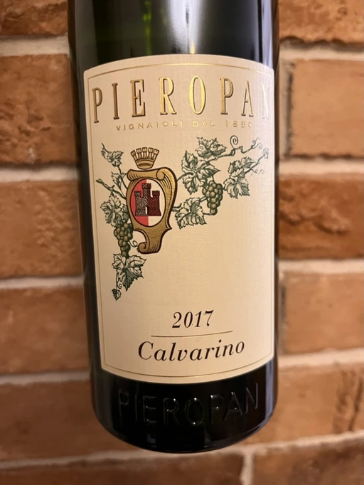
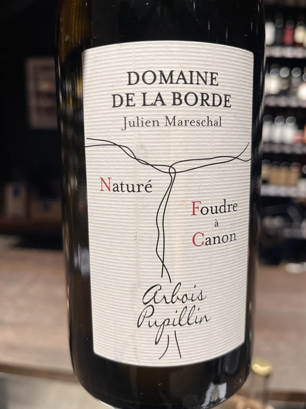
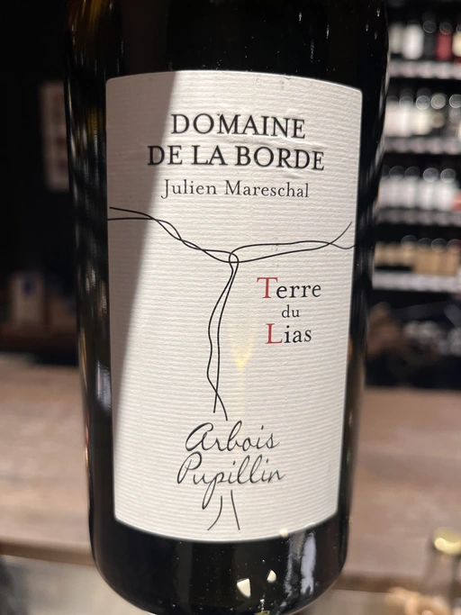
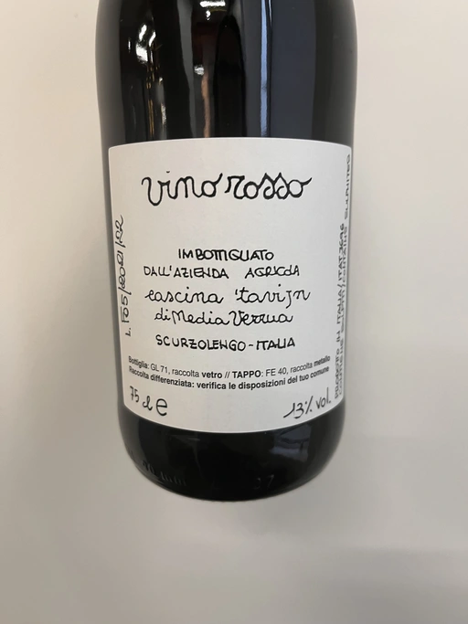
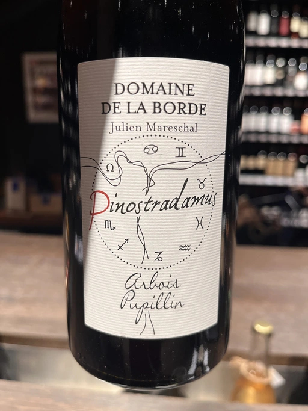

- Type
- White Still, Dry
- Producer
- Pieropan
- Vintage
- 2017
- Location
- Italy, Soave DOC
- Grapes
- Garganega
- Alcohol
- 12.5
- Sugar
- 1.3
- Price
- 890 UAH
- Cellar
- N/A
Ratings
2022-12-09 - 7.00
Ah, you think ageing on lees is your ally? You merely adopted the lees. Calvarino was born in it, moulded by it. Jokes aside, it’s modest and shy. It has aromas of buttered bakery and white flowers. The palate is a bit flat; it has only volume and lees-driven flavours mixed with some yellow fruits. Not interesting. But I suspect my experience is not typical, and I have to taste this wine again. Shame.
Related

Domaine de La Borde
Foudre à Canon - 2019

Domaine de La Borde
Terre du Lias - 2018

Alfredo Maestro
La Cosa - The Thing - 2020

Cascina Tavijn
Vino Rosso L.F05/2021/22 - NV

Domaine de La Borde
Pinostradamus Pinot Noir - 2018

Domaine de La Borde
Terre du Lias - 2020

Domaine de La Borde
Vin Jaune - 2013